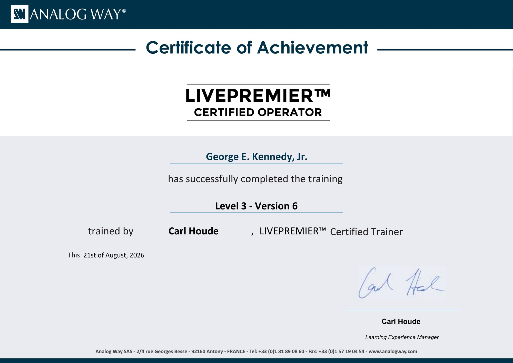

I refer to three platforms as my High-Resolution Screen Management "Trilogy":
- Analog Way Aquilon
- Barco Encore3
- PixelHue — Q8, P80 & P20
These are three high-resolution screen management platforms I may be called to work with from one production to the next.
My certifications and advanced training within those platforms — including Analog Way Aquilon Levels 1–3, Barco Encore3, and PixelHue Level 2 — are part of making sure I'm prepared when that call comes.
For me, the certifications aren't the Trilogy.
The platforms are.
The certifications represent the training I've invested in to become more knowledgeable and capable across each ecosystem.
The Responsibility of the Video Engineer
As a freelance ProAV video engineer, our responsibility goes well beyond connecting cables and operating equipment.
We're responsible for making sure systems are properly wired and configured, signals are routed correctly, sources and destinations are where they need to be, and ultimately, the final content gets to the screens.
When a client hires an engineer, there's an expectation behind that call:
Know the platform. Understand the production requirements. Be ready to execute.
That responsibility is a big part of why I continue investing in manufacturer training and certification.

Why These Three Platforms?
As a freelance engineer, I generally know which platform I'll be working on before I arrive on site. But from one show to the next, that platform can change.
One production may put me behind an Analog Way Aquilon. Another may be built around a Barco Encore3. The next may have me working with a PixelHue Q8, P80, or P20.
Each ecosystem approaches high-resolution screen management differently. The terminology may change. The interface may change. The workflow may change.
But the responsibility of the engineer doesn't.
Understand the system and get the content where it needs to go.
That's why developing proficiency across all three has been important to me.

Are Certifications Necessary?
That depends on who you ask.
There is no certification that replaces field experience.
A classroom can't recreate every situation you're going to encounter on a show site. It can't replace years of building systems, tracing signal paths, troubleshooting failures, responding to last-minute production changes, or making decisions while the show clock is running.
Experience matters.
But I've never viewed certification and experience as an either-or decision.
For me, they complement each other.
Why I Choose Manufacturer Training
Whenever possible, I prefer going directly to the manufacturers for training.
There is value in having dedicated time with a platform when you're not working against a show clock.
You can build. Configure. Ask questions. Make mistakes. Troubleshoot. Start over. And dig into parts of the system you may never have time to explore during an actual production.
More importantly, manufacturer training gives me the opportunity to understand not only how to perform a task, but why the platform behaves the way it does.
That knowledge becomes extremely valuable when you're in the field and something doesn't work the way you expected.
The Show Site Shouldn't Be the Starting Point
I'm always learning on show site.
Every production brings a different combination of equipment, content, people, venue requirements, client expectations, and unexpected problems. That learning never stops.
But there's a difference between continuing to develop your craft and learning the fundamentals of a platform for the first time after you've already been hired to operate it.
If I'm brought onto a production as the video engineer, I want to arrive with an understanding of the platform. Then I can focus on what the client hired me to do:
- Build and configure the system.
- Manage the signal flow.
- Get the content where it needs to go.
- Troubleshoot when something goes wrong.
- And ultimately, get the final image to the screens.
Certification Doesn't Make You an Engineer
A certification demonstrates training. It does not automatically make someone an engineer.
Engineering comes from applying that knowledge in the field.
It's understanding signal flow beyond the diagram. It's knowing where to start when an input suddenly disappears. It's recognizing whether the problem is at the source, transport, processing, configuration, output, or destination. It's remaining methodical when the show clock is running. And it's having enough experience to solve one problem without creating three more.
Certification can strengthen that foundation.
It doesn't replace it.
My High-Resolution Screen Management "Trilogy"
- Analog Way Aquilon
- Barco Encore3
- PixelHue — Q8, P80 & P20
My certifications represent the investment I've made in learning these platforms directly and continuing to develop those skills in the field.
Certifications
Analog Way Aquilon


Barco

PixelHue
These five certifications represent more than completed courses to me.
They represent preparation across three different high-resolution screen management ecosystems — and a commitment to continuing to learn the platforms I'm hired to operate.
Three platforms. Three different ecosystems. Different tools and workflows.
But the objective remains the same:
Be prepared. Stay current. Be ready when the call comes.
Because when a client hires me as a video engineer, they're not hiring me to learn the fundamentals of their system.
They're hiring me to help make the show happen.
Training teaches you the platform.
Experience teaches you the show.
Troubleshooting teaches you to be an engineer.